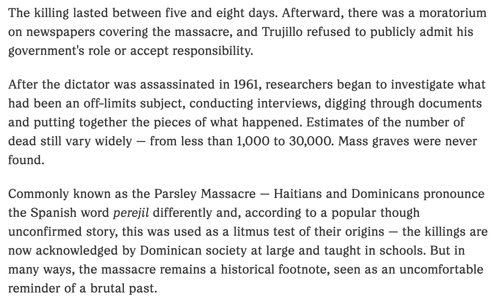
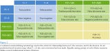

Week 2: Machine Learning, Training Data, and Biases
DSAN 5450: Data Ethics and Policy
Spring 2025, Georgetown University
Ethical Issues Part 2
- Data Science for Who? ✅
- Individuals \(\leftrightarrow\) Structures ✅
- Operationalization 👀
- Fair Comparisons 👀
- Implementation 👀
Operationalization 👀
- Think of claims commonly made based on “data”:
- Markets create economic prosperity
- A glass of wine in the evening prevents cancer
- Policing makes communities safer
- How exactly are “prosperity”, “preventing cancer”, “policing”, “community safety” being measured? Who is measuring? Mechanisms for feedback \(\leadsto\) change?

What Is Being Compared?
| Apples | Oranges | Pears |
|---|---|---|
| Polities w/250-500M people (US ~335M, UP ~250M, EU ~450M) | Polities w/11M people in the Caribbean (Cuba, Haiti, Dominican Republic) | Polities w/over 1 billion people (China ~1.4B, India ~1.4B, Africa ~1.4B, ⬆️+⬇️ America ~1B) |
| Democracies (US) | Democracies til they democratically elected someone US didn’t like (Iran, Guatemala, Chile) | Non-democracies which brutally repress democratic movements w/US arms (Saudi Arabia) |
| Colonizing polities (US) | Polities colonized by them (Philippines) | Non-colonized polities (Ethiopia, Thailand) |
| Polities w/infrastructure built up over 250+ yrs via slave labor (US 🇺🇸) | Polities populated by former slaves (Liberia 🇱🇷) | Polities that paid reparations to descendants of [certain] enslaved groups (Germany) |
| Polities independent since 1776 (US) | Polities independent since 1990 (Namibia) | Non-self-governing polities (Puerto Rico, Palestine, New Caledonia) |
| Polities enforcing a 60 yr embargo on Cuba (US) | Polities with a 60 yr embargo imposed on them by US (Cuba) | Polities without a 60 yr embargo imposed on them by US (…) |
How Are They Being Compared?
- What metric? Over what timespan?
- What unit of obs \(\leadsto\) agg function \(\leadsto\) level of aggregation?

…There is Still Hope! I Promise!
- Fair Comparison through Statistical Matching:
- Lyall (2020): “Treating certain ethnic groups as second-class citizens […] leads victimized soldiers to subvert military authorities once war begins. The higher an army’s inequality, the greater its rates of desertion, side-switching, and casualties”
Matching constructs pairs of belligerents that are similar across a wide range of traits thought to dictate battlefield performance but that vary in levels of prewar inequality. The more similar the belligerents, the better our estimate of inequality’s effects, as all other traits are shared and thus cannot explain observed differences in performance, helping assess how battlefield performance would have improved (declined) if the belligerent had a lower (higher) level of prewar inequality.
Since [non-matched] cases are dropped […] selected cases are more representative of average belligerents/wars than outliers with few or no matches, [providing] surer ground for testing generalizability of the book’s claims than focusing solely on canonical but unrepresentative usual suspects (Germany, the United States, Israel)
Does Inequality Cause Poor Military Performance?
Covariates |
Sultanate of Morocco Spanish-Moroccan War, 1859-60 |
Khanate of Kokand War with Russia, 1864-65 |
|---|---|---|
| \(X\): Military Inequality | Low (0.01) | Extreme (0.70) |
| \(\mathbf{Z}\): Matched Covariates: | ||
| Initial relative power | 66% | 66% |
| Total fielded force | 55,000 | 50,000 |
| Regime type | Absolutist Monarchy (−6) | Absolute Monarchy (−7) |
| Distance from capital | 208km | 265km |
| Standing army | Yes | Yes |
| Composite military | Yes | Yes |
| Initiator | No | No |
| Joiner | No | No |
| Democratic opponent | No | No |
| Great Power | No | No |
| Civil war | No | No |
| Combined arms | Yes | Yes |
| Doctrine | Offensive | Offensive |
| Superior weapons | No | No |
| Fortifications | Yes | Yes |
| Foreign advisors | Yes | Yes |
| Terrain | Semiarid coastal plain | Semiarid grassland plain |
| Topography | Rugged | Rugged |
| War duration | 126 days | 378 days |
| Recent war history w/opp | Yes | Yes |
| Facing colonizer | Yes | Yes |
| Identity dimension | Sunni Islam/Christian | Sunni Islam/Christian |
| New leader | Yes | Yes |
| Population | 8–8.5 million | 5–6 million |
| Ethnoling fractionalization (ELF) | High | High |
| Civ-mil relations | Ruler as commander | Ruler as commander |
| \(Y\): Battlefield Performance: | ||
| Loss-exchange ratio | 0.43 | 0.02 |
| Mass desertion | No | Yes |
| Mass defection | No | No |
| Fratricidal violence | No | Yes |
No Crumbs
(I have no dog in this fight, I’m not trying to improve military performance of an army, but got damn)

Implementation 👀


Ethics of Eliciting Sensitive Linguistic Data

Ethical Issues in Applying Data Science/ML to Particular Problems

Facial Recognition Algorithms


Large Language Models


Military and Police Applications of AI


Your Job: Policy Whitepaper
- So is technology/data science/machine learning…
- “Bad” in and of itself?
- “Good” in and of itself? or
- A tool that can be used to both “good” and “bad” ends?
- “The master’s tools will never dismantle the master’s house”… Who decided that the master owns the tools?
- How can we curtail some uses and/or encourage others?
- If only we had some sort of… institution… for governing its use in society… some sort of… govern… ment?
From Week 7 Onwards, You Work At A Think Tank
Machine Learning at 30,000 Feet
Three Component Parts of Machine Learning
- A cool algorithm 😎😍
- [Possibly benign but possibly biased] Training data ❓🧐
- Exploitation of below-minimum-wage human labor 😞🤐 (Dube et al. 2020, like and subscribe yall, get those ❤️s goin)
A Cool Algorithm 😎😍

Training Data With Acknowledged Bias
- One potentially fruitful approach to fairness: since we can’t eliminate it, bring it out into the open and study it!
- This can, at very least, help us brainstorm how we might “correct” for it (next slides!)

From Gendered Innovations in Science, Health & Medicine, Engineering, and Environment
Word Embeddings

- Notice how the \(x\)-axis has been selected by the researcher specifically to draw out (one) gendered dimension of language!
- \(\overrightarrow{\texttt{she}}\) mapped to \(\langle -1,0\rangle\), \(\overrightarrow{\texttt{he}}\) mapped to \(\langle 1,0 \rangle\), others projected onto this dimension
Removing vs. Studying Biases


Context-Free Fairness
- Who Remembers 🎉Confusion Matrices!!!🎉
- Terrifyingly higher stakes than in DSAN 5000! Now \(D = 1\) could literally mean “shoot this person” or “throw this person in jail for life”

Categories of Fairness Criteria
Roughly, approaches to fairness/bias in AI can be categorized as follows:
- Single-Threshold Fairness
- Equal Prediction
- Equal Decision
- Fairness via Similarity Metric(s)
- Causal Definitions
- [Week 3] Context-Free Fairness: Easier to grasp from CS/data science perspective; rooted in “language” of ML (you already know much of it, given DSAN 5000!)
- But easy-to-grasp notion \(\neq\) “good” notion!
- Your job: push yourself to (a) consider what is getting left out of the context-free definitions, and (b) the loopholes that are thus introduced into them, whereby people/computers can discriminate while remaining “technically fair”
Laws: Often Perfectly “Technically Fair”
Ah, la majestueuse égalité des lois, qui interdit au riche comme au pauvre de coucher sous les ponts, de mendier dans les rues et de voler du pain!
(Ah, the majestic equality of the law, which prohibits rich and poor alike from sleeping under bridges, begging in the streets, and stealing loaves of bread!)
Anatole France, Le Lys Rouge (France 1894)
Context-Sensitive Fairness 🧐


…And INVERSE Fairness 🤯